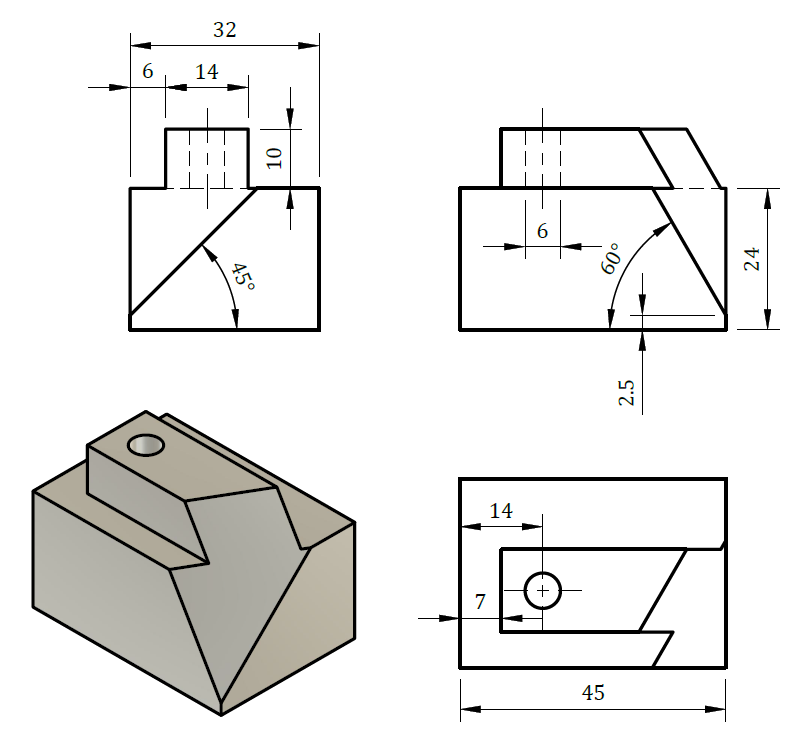
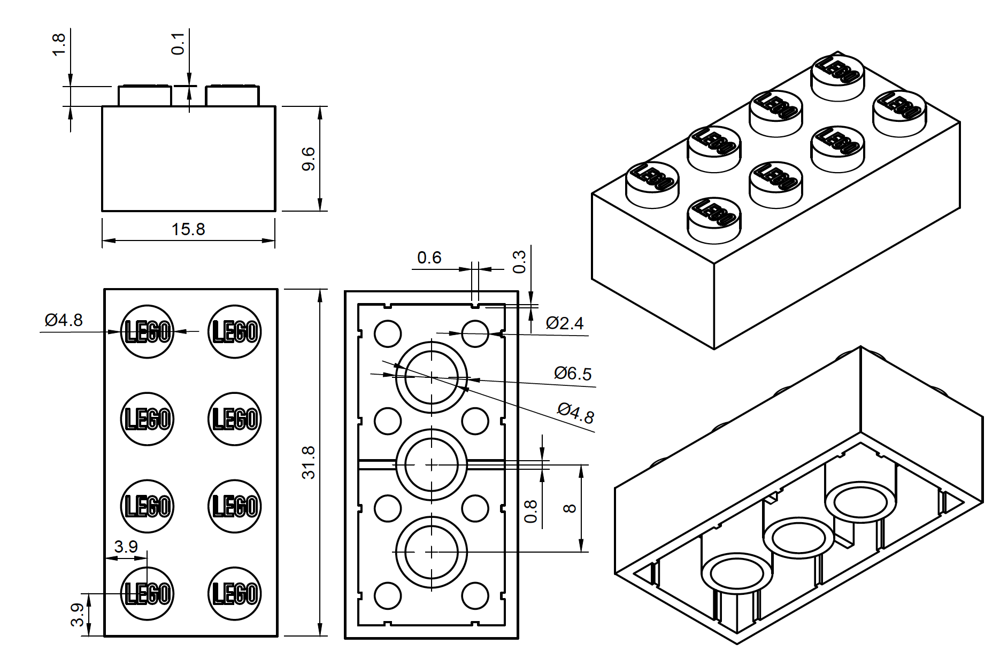
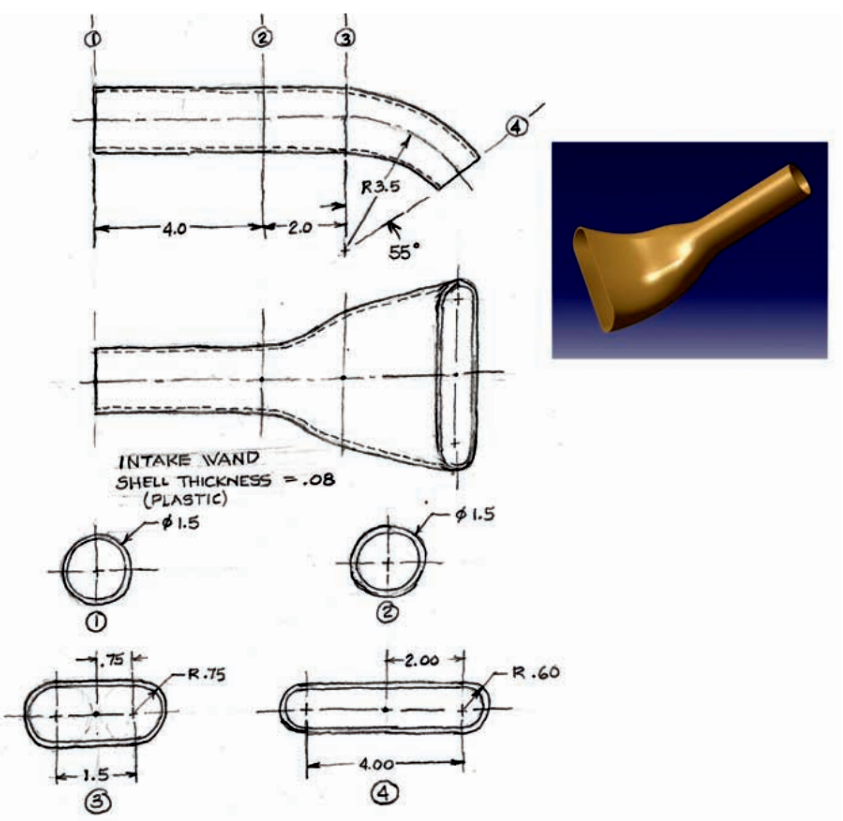
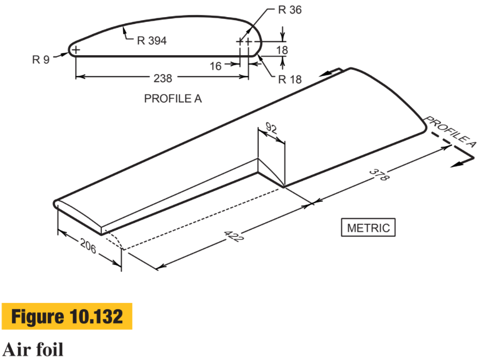
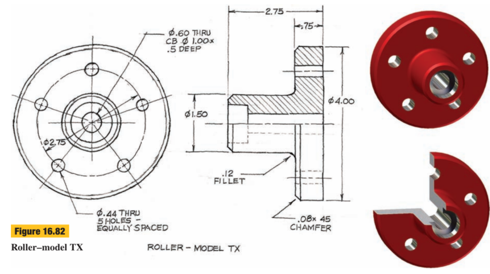
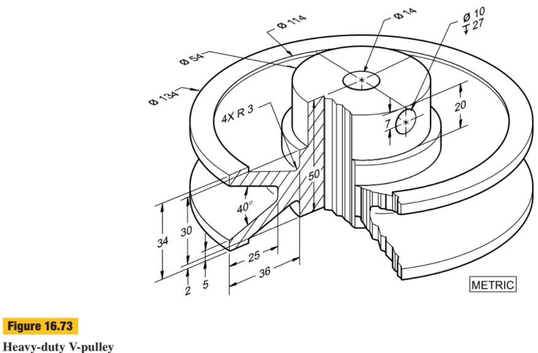
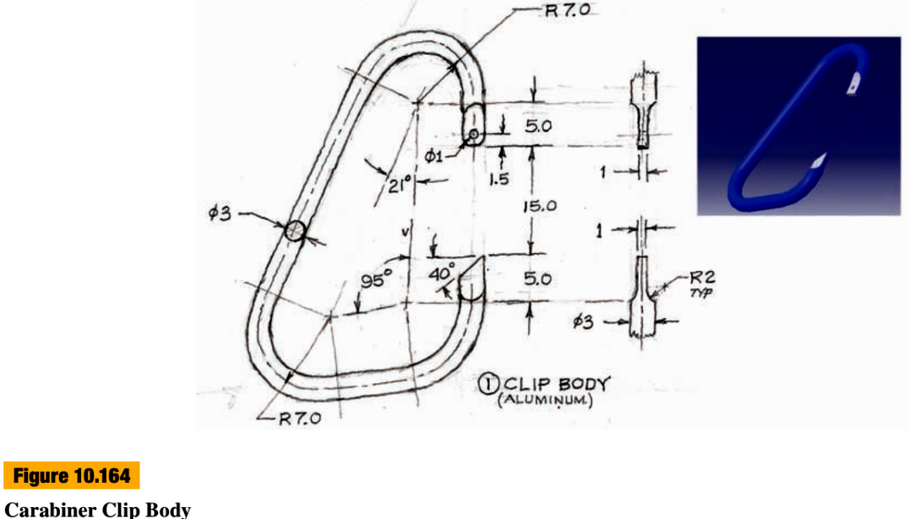
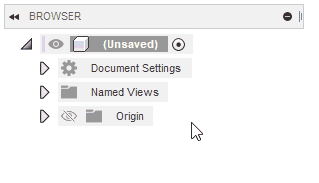
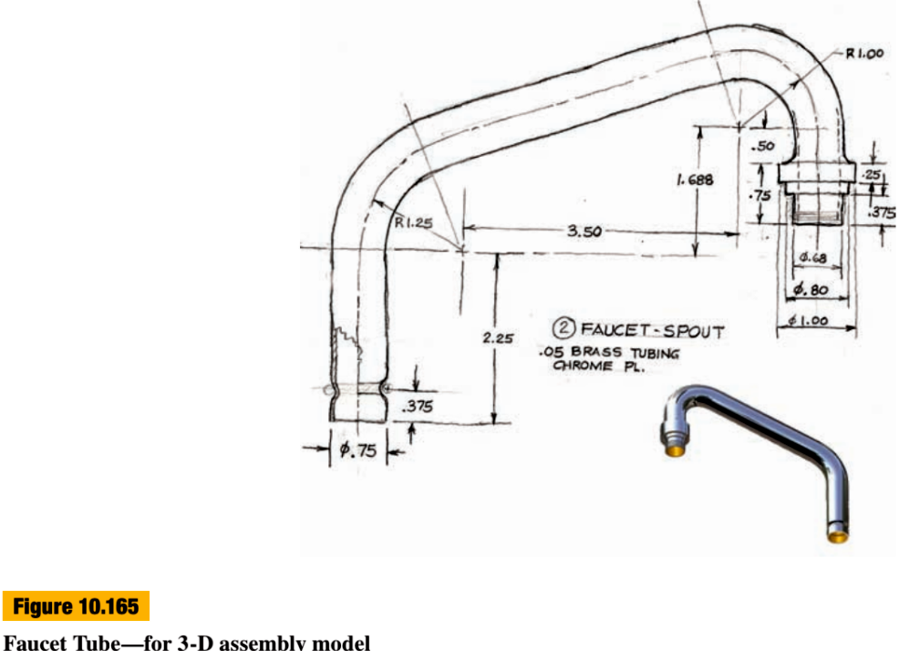

1.5 Advance 3D drawing
如果你打開Fusion360上方的工具列，你會發現有很多各式各樣的工具，這些工具在繪圖時會非常有幫忙，本章會介紹幾個常用的工具。
1.5 Advance 3D drawing1. Plane & axis練習題12. Shell練習題13. Loft練習題1練習題24. Revolve練習題1練習題25. Sweep練習題1練習題26. 混合練習練習題1
1. Plane & axis
輔助平工具是常用的工具之一，其中幾個常用的包括:

- Offset Plane: 指定一個平行於點選面的偏移平面
- Midplane: 指定兩個平面的中間面，對於用mirror feature十分有用
- Plane through Two Edges/ Plane through Three Points: 常用於指定一個平面，將立體切開
其他功能用到的時候再講解。
練習題1
試試下面這一條，需要用到 Plane through Three Points

試試用自己的判斷來劃，如果真的不行才使用下面的影片。
2. Shell
Shell為十分好用的薄殼功能，點選作為開口的面，指定厚度，就能做到一個碗一樣的容器，省卻offset再將立體相減的步驟。

試試完成下面的題目:
練習題1
💡先劃好整個實體，八個圓形可以用立體的rectanglar pattern完成，之後才做shell
💡shell的厚度圖則有標示，為1.2mm
💡八個圓形的垂直和水平間距為8mm，圖則有標示，相減一下可以計算得到的
💡中間打橫的骨距離lego底部為2mm


3. Loft
Loft 是其中一個常用的成型工具。對於常見的喉管連接工件，因喉管有不同尺寸，有圖有方，如果製作一個連接器，就需要一個劃一個上下圓上方的立體，如果用一般手則去劃會非常麻煩，但常見的CAD圖軟件都有一個叫loft的功能，將不同造型的面連接。
如下圖例子，loft可以直接將兩個面相接，也可以指定一條需要穿過的中心線。

試試下面這兩題:
練習題1
💡先用sketch繪畫中心線 善用offset plane去指定1,2,3三個面 第四個面就需要用plane at angle loft時需要用center line rail 最後造好後再用shell點旗

練習題2

4. Revolve
旋轉成型工具就有點似現實世界中的車床般，透過緣著一個軸旋轉一個profile成型。

試試以下這兩題:
練習題1
💡5個圓孔可以在旋轉成型後先開一個，再用3d的circular pattern 複製feature
💡這題比較容易，可以自己試一試，不懂才看片

練習題2
這一題則是讓你練習的，可以先在top view劃兩個柱體，之後再在side view劃v型，會容易一點。答案

5. Sweep
掃掠成型(Sweep)工具是指將一個profile緣著一條軌跡掃掠。

練習題1

練習題2
原題目的尺寸是inch，但為統一課程和方便大家，請大家將所有的尺寸當成是mm，再放大10倍，所以現在的單位是cm 💡可以在左邊欄的"document setting"中，按下小筆，就可以修改單位為cm


6. 混合練習
以下題混合幾個常用的造型工具。
練習題1